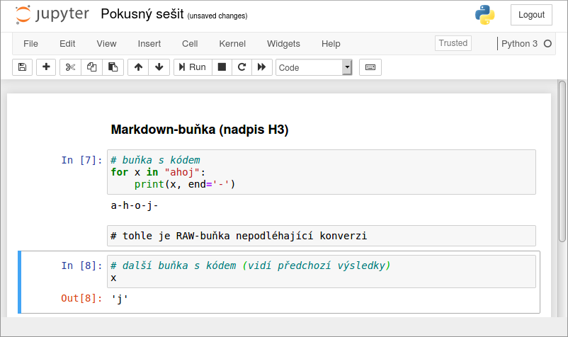
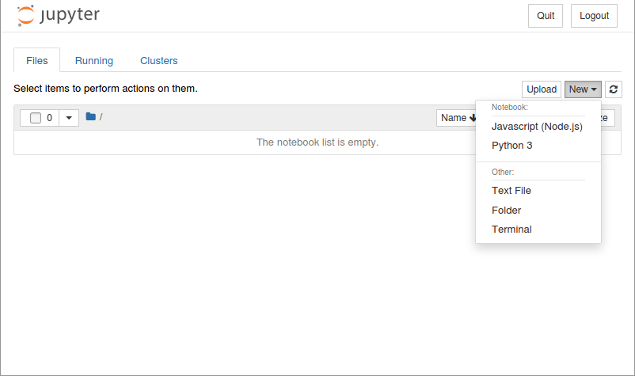
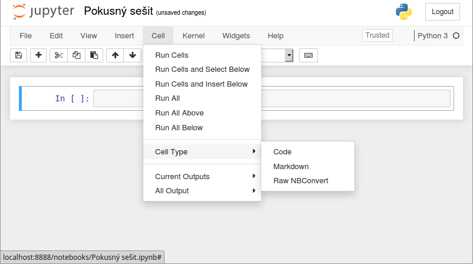
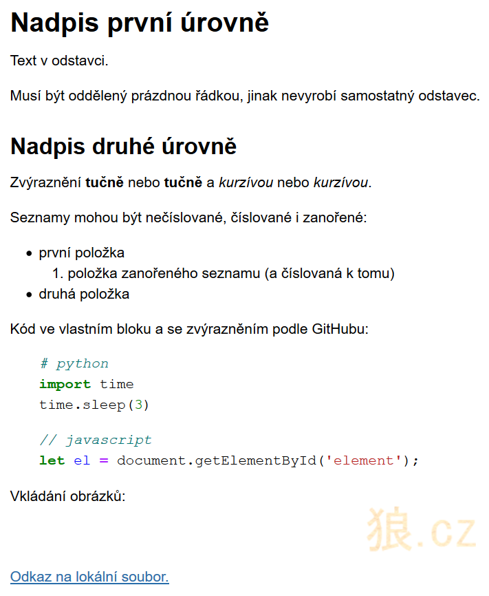

Základní použití
by Jiří Znamenáček
Úvod
Základním principem jupyteřího notebooku je možnost míchat kód s jeho textovým (formátovaným) popisem a především pak vidět i výstupy jednotlivých částí kódu:

Jelikož buňky s kódem jsou na sobě závislé, ale přitom se dají vyhodnotit v libovolném pořadí, je jasné, že si na toto pořadí musíme dát pozor.
PS: Kromě toho – protože notebook je vlastně „jenom“ webová stránka – může každá buňka obsahovat (a často obsahuje) mraky dalšího HTML a javascriptího kódu. K dispozici je mnoho předpřipravených (užitečných) widžetů.
Otevření „notebooku“
Již existující notebook můžete otevřít přímo při spouštění jupiteřího serveru z příkazové řádky:
$ jupyter notebook pokus.ipynb
Nový notebook založíte z běžícího GUI-prostředí výběrem požadovaného kernelu z menu vpravo nahoře:

Nově otevřený notebook doporučuji brzy přejmenovat ^_~ Jde to buď z menu nebo klikem myší do vlastního nadpisu nahoře.
Práce s „notebookem“
Notebook sám se poměrně často ukládá, ale samozřejmě si jeho uložení můžete i vynutit:
- klávesou S, ale pouze v editačním módu;
- kombinací CTRL+S kdykoliv.
Ale pozor! „Autosave“ ukládá do souboru otevřeného notebooku, zatímco ruční uložení do tzv. checkpointu (který se vytvoří v podadresáři .ipynb_checkpoints). Z menu File > Revert to Checkpoint se můžete vrátit k předchozí verzi notebooku, která pak vlastně nahradí původní otevřený notebook.
PS: Než začnete jásat, že jupiteří notebook má svoji vlastní historii, tak to bohužel není pravda – ukládá se jen a pouze jeden checkpoint, tudíž se můžete vrátit pouze o jedno ruční uložení zpět.
Typy buněk
Pracovní notebook obsahuje tři typy buněk:
-
kód – vlastní kousky programu v jazyce kernelu (klávesová zkratka
Y); -
formátovaný text – zadává se ve formátu Markdown, renderuje se jako HTML (klávesová zkratka
M); -
„raw“-text – takto zadaná buňka není notebookem vyhodnocována a přepíše se rovnou na výstup (klávesová zkratka
R).📝Typicky se do ní zapisují kusy kódu, které se NEmají vyhodnotit.
Typ nově založené buňky je vždy kód. Chcete-li jej změnit, jde to výše uvedenými klávesovými zkratkami (dokud nezačnete do buňky psát) nebo přes menu:

Práce s buňkami
Z konce předchozího slajdu je asi zjevné, že buňka v notebooku může být jistým způsobem vybrána, aniž by bylo možné do ní psát (což je jinak běžný význam termínu fokus). Zároveň v tomto stavu – a jen v tom stavu! – reaguje na doslova armádu jednopísmenných klávesových zkratek (viz menu Help > Keyboard Shortcuts), mezi které patří třeba kompletní smazání celé buňky klávesou X a podobné.
Obecně má vybraná buňka rámeček, který se liší barvou svého levého kraje:
-
zelený – buňka je v tzv. editačním módu a umožňuje klasickou přímou lokální editaci svého obsahu (psaní kódu nebo textu);
📝Navíc se vpravo nahoře vedle kernelu objeví ikonka tužky.
- modrý – buňka je v tzv. příkazovém módu a reaguje na globální operace nad sebou (např. změna typu buňky, smazání buňky, přidání buňky, výběr buňky…).
Mezi oběma módy se přepíná klávesami ENTER (z příkazového do editačního) a ESC (z editačního do příkazového).
Na dalších slajdech si ukážeme nejdůležitější klávesové zkratky příkazového módu.
Buňky s kódem
U buněk s kódem vás samozřejmě bude především zajímat, jak vepsaný kód spustit. Jde to třemi způsoby:
- CTRL+ENTER – vykoná kód buňky a přepne ji do příkazového módu;
- ALT+ENTER – vykoná kód buňky, založí pod ní další, přesune na ni kurzor a přepne ji do editačního módu;
-
SHIFT+ENTER – vykoná kód buňky a přesune fokus v příkazovém módu na následující buňku;
📝Pokud je ovšem uvedená buňka poslední v notebooku, chová se jako ALT+ENTER.
Užitečné jsou také následující klávesové zkratky:
-
L – přepíná zobrazení čísel řádek (ve výchozím stavu nejsou vidět);
📝Užitečné například pro komentáře nebo hledání chyb v kódu.
-
O – přepíná zobrazení výstupu buňky (ve výchozím stavu pochopitelně je vidět);
📝Šikovné, když je nějaký výstup příliš veliký nebo když ho chcete dočasně schovat (například před posluchači).
A v neposlední řadě též „odseknout“ kernel zaseknutý nějakým výpočtem:
- II – (pokus o) přerušení běhu kernelu (interrupt);
- 00 – restart kernelu (je to číslice 0; a bude při tom smazán obsah všech proměnných).
Trochu překvapivě neexistuje klávesová zkratka pro smazání výstupů buněk. Můžete si nějakou sami dopsat (menu Help > Edit Keyboard Shortcuts), zvlášť pokud ji potřebujete pro smazání výstupů všech buněk, nebo pro jednu buňku použít „háček“ přes ESC R Y, který buňku nejdříve změní na „raw“, čímž odstraní její výstup, a následně zase přepne zpátky na kód.
Poznámka k „[*]“
Probíhá-li v nějaké buňce delší výpočet, ukazuje se po její levé straně v hranatých závorkách místo čísla pořadí vyhodnocení buňky znak *.
Byl-li pod buňkou před zahájením takovéhoto dlouhého výpočtu již nějaký dřívější výstup, bude při zahájení výpočtu nejdříve smazán.
PS: V době takovéhoto dlouhého výpočtu jedné buňky můžete klidně pustit výpočet v dalších buňkách, ale pro případ synchronního kódu se výsledků nedočkáte, dokud se nedopočítají předchozí spuštěné.
Magické příkazy „%“ a „%%“
Při práci v notebooku nejsme (většinou) omezeni pouze na příkazy aktuálně vybraného jazyka, ale máme k dispozici i tzv. magické příkazy samotného kernelu. Poznáte je snadno (alespoň v Pythonu) – začínají na znak:
-
%– příkazy kernelu platné pro řádku, na níž jsou použité; -
%%– příkazy kernelu platné pro celou buňku.
Kompletní přehled magických příkazů najdete v dokumentaci, zde si ukážeme jen pár základních.
„%“ – řádkové magické příkazy
-
%magica%quickref– vypíší dostupné magické příkazy, ve druhém případě včetně krátké nápovědy (vřele doporučuji); -
%pwd, resp.%cd– vypíše aktuální pracovní adresář (velmi užitečné), respektive ho změní na jiný; -
%time,%timeit– změří dobu vykonávání kódu na aktuální řádce;📝První pomocí modulu time, druhý pak nepřekvapivě pomocí modulu timeit (takže se dá řídit i parametry pro podrobnější měření). -
%whos– vypíše podrobné informace o objektech (proměnných) dostupných v notebooku; -
%env– vypisuje (a též nastavuje) proměnné prostředí; -
%history– vypíše historii příkazů dosud zadaných v notebooku;📝Rozsah výpisu se dá řídit parametry. -
%reset– smaže všechny uživatelem definované objekty, tj. v podstatě uvede notebook do stavu po startu, jen ponechá původní výpisy (obzvláště užitečné, když vám předchozí dva příkazy nepomůžou se vymotat ze zašmodrchané historie :-); -
%conda,%pip– umožňují v notebooku volat příkazy Condy a pipu.
„%%“ – celobuňkové magické příkazy
-
%%timea%%timeit– stejně jako jejich řádkové varianty měří čas vykonání kódu, ale tentokrát celé buňky; -
%%pypy– vykoná kód buňky pomocí interpretru PyPy;📝Je to zkratka za%%script pypy. Existují i další pro další jazyky (klidně můžete třeba v převážně pythoním notebooku zavolat kód v jazyce Julia). -
%%sh– vykoná kód buňky jako příkazy pro unixový shell; -
%%writefile SOUBOR– zapíše obsah buňky do samostatného souboru SOUBOR.
Buňky (a „notebook“) obecně
Nejdříve ultimátní zkratka:
- H – otevře okénko s přehledem klávesových zkratek ^_^
Navigace po buňkách:
- ↑ / K – přesun fokusu o buňku výše;
- ↓ / J – přesun fokusu o buňku níže.
Přidávání nových buněk:
- A – nad aktuální buňkou (above);
- B – pod aktuální buňkou (below).
Buňkové editační příkazy:
- X – vyříznutí (cut);
- C – zkopírování (copy);
- V – vložení (paste);
- Z – zrušení předchozí akce či akcí (undo);
- DD – smazání (tedy klávesa D dvakrát hned za sebou; delete).
Další užitečné klávesové zkratky:
- CTRL+SHIFT+- – rozdělení buňky v místě kurzoru na dvě (je to tedy „CTRL plus SHIFT plus -“);
-
SHIFT+M – sloučení vybraných buněk (merge).
📝Výběr více buněk se provádí klasicky posunem ve vybraném směru s přidrženým SHIFTem.
Buňky s textem („Markdown“)
Značkovací systém Markdown je zjednodušeně řečeno způsob, jak zapsat vybranou podmnožinu HTML-značek pomocí obyčejného ASCII-textu. Nejlepší bude rovnou příklad – následující text s markdownem..
# Nadpis první úrovně
Text v odstavci.
Musí být oddělený prázdnou řádkou, jinak nevyrobí samostatný odstavec.
## Nadpis druhé úrovně
Zvýraznění **tučně** nebo __tučně__ a *kurzívou* nebo _kurzívou_.
Seznamy mohou být nečíslované, číslované i zanořené:
* první položka
1. položka zanořeného seznamu (a číslovaná k tomu)
* druhá položka
Kód ve vlastním bloku a se zvýrazněním podle GitHubu:
```python
# python
import time
time.sleep(3)
```
```javascript
// javascript
let el = document.getElementById('element');
```
Vkládání obrázků: 
[Odkaz na lokální soubor.](overview.xml)
..se vyrendruje následujícím způsobem:

Matematické vzorce v textu
Nejen matematické vzorce v notebooku můžeme snadno zobrazit buď pomocí MathJaxu v Markdown-buňce..
$P(A \mid B) = \frac{P(B \mid A)P(A)}{P(B)}$
$…$, pro rovnici v samostatném odstavci (a zarovnanou na střed) pak $$…$$.
..nebo napsat kód v LaTeXu do normální buňky a nechat ji vyhodnotit pomocí magického příkazu %%latex:
%%latex
\begin{equation*}
e^{i \pi} = -1
\end{equation*}
Poznámka k bezpečnosti
Jupiteří notebook vidí soubory (a podadresáře) v adresáři, kde jste ho spustili.
Jupiteří notebook pokládá buňky s kódem, které jste sami ručně spustili, za bezpečné. Což znamená, že jakmile spustíte kód v cizím notebooku, bude Jupyter předpokládat, že víte, co děláte. Problém samozřejmě je, že z principu může spuštěný kód dělat prakticky cokoliv (jsou to klasické programovací jazyky!), takže pozor na to.